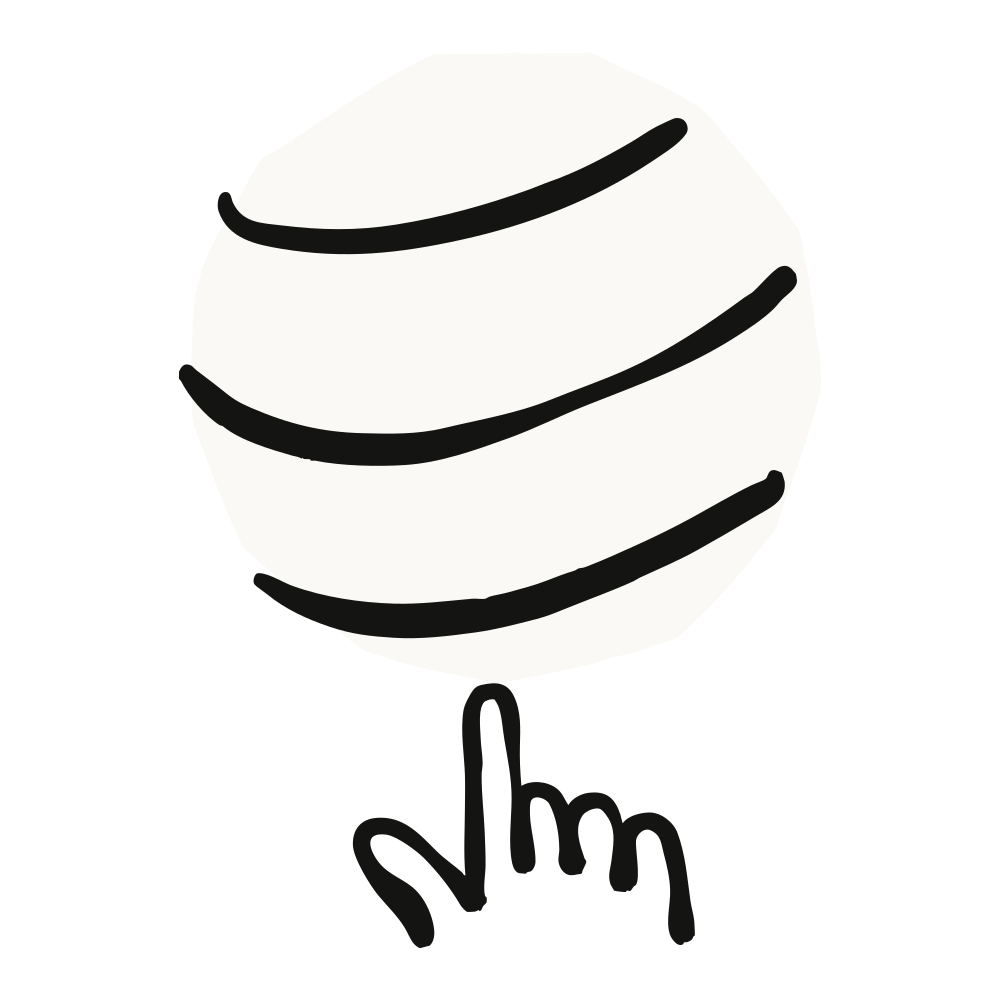

요즘 코딩 에이전트에 프롬프트를 넣는 대신 "루프를 설계한다(designing loops)"는 이야기가 많이 나옵니다. X(옛 트위터)에서 루프가 정확히 무엇인지 찾아보려고 시간을 좀 들이다 보면, 서로 다른 여러 가지 답을 마주하게 될 것입니다.
Claude Code 팀에서는 루프를 "에이전트가 종료 조건(stop condition)이 충족될 때까지 작업 사이클을 반복하는 것"으로 정의합니다. 우리는 다음 기준에 따라 몇 가지 유형의 루프를 분류합니다.
이 글에서는 주요 루프 유형, 각각을 언제 사용해야 하는지, 그리고 토큰 사용량을 관리하면서 코드 품질을 유지하는 방법을 다룹니다. 모든 작업에 복잡한 루프가 필요한 것은 아닙니다. 가장 단순한 해법부터 시작하고, 이 패턴들은 선택적으로 사용하세요.
여러분이 보내는 모든 프롬프트는, 각 턴을 직접 지휘하는 수동 루프를 시작합니다. Claude는 컨텍스트를 수집하고, 행동을 취하고, 작업 결과를 점검하고, 필요하면 반복한 뒤 응답합니다. 우리는 이를 에이전트 루프(agentic loop)라고 부릅니다.
예를 들어 Claude에게 좋아요 버튼을 만들어 달라고 해 봅시다. Claude는 여러분의 코드를 읽고, 수정을 가하고, 테스트를 실행한 뒤, 스스로 동작한다고 믿는 무언가를 돌려줍니다. 그러면 여러분이 직접 그 결과를 점검하고 다음 프롬프트를 작성합니다.
여러분의 수동 점검 단계를 SKILL.md로 인코딩해 두면 검증 단계를 개선할 수 있습니다. 그러면 Claude가 처음부터 끝까지(end-to-end) 자신의 작업을 더 많이 스스로 점검할 수 있습니다. 여기에는 Claude가 결과를 보고, 측정하고, 상호작용할 수 있게 해 주는 도구나 커넥터가 포함되어야 합니다. 점검이 정량적일수록 Claude가 스스로 검증하기가 쉬워집니다.
예를 들어 SKILL.md 파일에 다음과 같이 명시할 수 있습니다.
---
name: verify-frontend-change
description: Verify any UI change end-to-end before declaring it done.
---
# Verifying frontend changes
Never report a UI change as complete based on a successful edit alone. Verify it the way a human reviewer would:
1. Start the dev server and open the edited page in the browser.
2. Interact with the change directly. For a new control (button, input, toggle): click it, confirm the expected state change, and screenshot before/after.
3. Check the browser console: zero new errors or warnings.
4. Use the Chrome Devtools MCP, run a performance trace and audit Core Web Vitals.
If any step fails, fix the issue and rerun from step 1 — do not hand back partially verified work.때로는 한 턴으로 충분하지 않습니다. 특히 더 복잡한 작업에서 그렇습니다. 에이전트는 반복(iterate)할 수 있을 때 더 잘합니다. /goal로 "완료(done)"가 어떤 모습인지 정의해 두면 Claude가 반복을 계속하는 시간을 늘릴 수 있습니다.
성공 기준을 정의해 두면, Claude는 무엇이 "충분히 좋은지"를 스스로 판단해서 루프를 일찍 끝낼 필요가 없어집니다. Claude가 멈추려고 할 때마다 평가자(evaluator) 모델이 여러분의 조건을 점검하고, 목표가 충족되거나 여러분이 정한 턴 수에 도달할 때까지 다시 작업으로 돌려보냅니다.
그래서 통과한 테스트 수나 일정 점수 임계값 돌파처럼 결정론적(deterministic)인 기준이 매우 효과적입니다.

예를 들면 다음과 같습니다.
/goal get the homepage Lighthouse score to 90 or above, stop after 5 tries.어떤 에이전트 작업은 반복적입니다. 작업 자체는 똑같고 입력만 바뀝니다. 예를 들어 매일 아침 Slack 메시지를 요약하는 일이 그렇습니다. 또 다른 작업은 외부 시스템에 의존하는데, 외부 시스템과 연동하는 간단한 방법은 일정 간격으로 그것을 확인하고 바뀐 점에 반응하는 것입니다. 예를 들어 코드 리뷰를 받거나 CI가 실패할 수 있는 PR이 그렇습니다.
이런 경우에는 /loop로 Claude가 실행되는 시점을 트리거할 수 있습니다. /loop는 프롬프트를 일정 간격마다 다시 실행합니다. 예를 들면 다음과 같습니다.
/loop 5m check my PR, address review comments, and fix failing CI/loop는 여러분의 컴퓨터에서 실행되므로, 컴퓨터를 끄면 멈춥니다. /schedule로 루틴(routine)을 만들면 루프를 클라우드로 옮길 수 있습니다.
위에서 다룬 프리미티브들은 오토 모드(auto mode)나 다이내믹 워크플로(dynamic workflows)(리서치 프리뷰) 같은 다른 Claude Code 기능과 함께 조합되어, 장시간 실행되는 작업을 위한 루프를 구성할 수 있습니다.
예를 들어 들어오는 피드백을 처리하려면 다음을 사용할 수 있습니다.
/schedule(리서치 프리뷰)로 새 리포트를 확인하는 루틴을 실행/goal로 "완료"가 어떤 모습인지 정의하고, 스킬(skills)로 그것을 어떻게 검증할지 문서화
이것들을 한데 합치면, 프롬프트는 다음과 같은 모습이 될 수 있습니다.
/schedule every hour: check #project-feedback for bug reports. /goal: don't stop until every report found this run is triaged, actioned, and responded to. When fixing a bug, use a workflow to explore three solutions in parallel worktrees and have a judge adversarially review them.루프 출력물의 품질은 그 주변을 둘러싼 시스템에 달려 있습니다. 시스템을 설계할 때는 다음을 고려하세요.
/code-review 스킬이나 GitHub용 Code Review를 사용할 수 있습니다.개별 결과물이 기준에 못 미칠 때는 그 개별 문제만 고치고 멈추지 마세요. 그것을 인코딩해서 앞으로의 모든 반복을 위해 시스템 전체를 개선하려고 시도하세요.
토큰 사용량을 관리하려면 루프에 명확한 경계가 있어야 합니다.
/usage 명령은 최근 사용량을 스킬, 서브에이전트, MCP별로 분해해 보여 줍니다. 인자 없이 /goal을 실행하면 지금까지의 턴 수와 토큰 사용량을 보여 주고, /workflows는 각 에이전트의 토큰 사용량을 보여 주며 언제든 에이전트를 멈출 수 있습니다.정리하면 다음과 같습니다.
| 루프 | 당신이 넘기는 것 | 이럴 때 쓰세요 | 활용 수단 |
|---|---|---|---|
| 턴 기반 | 점검(check) | 탐색하거나 결정을 내리는 중일 때 | 커스텀 검증 스킬 |
| 목표 기반 | 종료 조건(stop condition) | "완료"가 어떤 모습인지 알고 있을 때 | /goal |
| 시간 기반 | 트리거(trigger) | 작업이 프로젝트 바깥에서 일정에 따라 일어날 때 | /loop, /schedule |
| 능동적 | 프롬프트(prompt) | 작업이 반복적이고 잘 정의되어 있을 때 | 위의 모든 것, 그리고 다이내믹 워크플로 |
루프를 시작하려면, 여러분이 이미 하고 있는 일을 들여다보세요. 여러분이 병목이 되는 작업 하나를 골라, 어떤 부분을 넘길 수 있을지 자문해 보세요. 검증 점검을 작성할 수 있나요? 목표가 충분히 명확한가요? 그 작업이 일정에 따라 들어오나요?
아이디어가 생기면 루프를 실행하고, 어디서 멈추거나 과하게 나아가는지 같은 결과를 관찰하세요. 그리고 그 루프를 개선하는 것을 두려워하지 마세요.
더 자세한 내용은 Claude Code 문서의 에이전트 병렬 실행(running agents in parallel) 페이지와 함께 loop, schedule, goal, 다이내믹 워크플로(dynamic workflows) 페이지를 읽어 보세요.
이 글은 Delba de Oliveira와 Michael Segner가 작성했습니다.